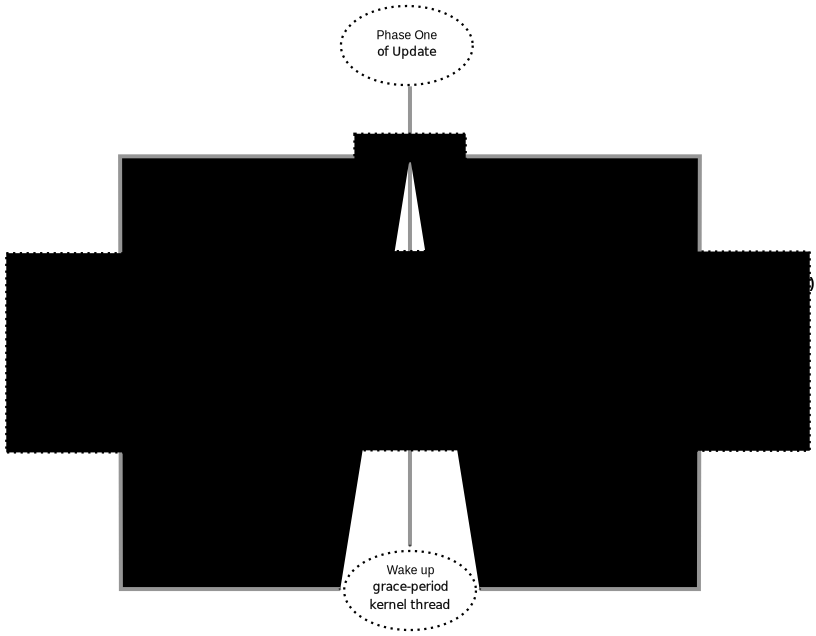
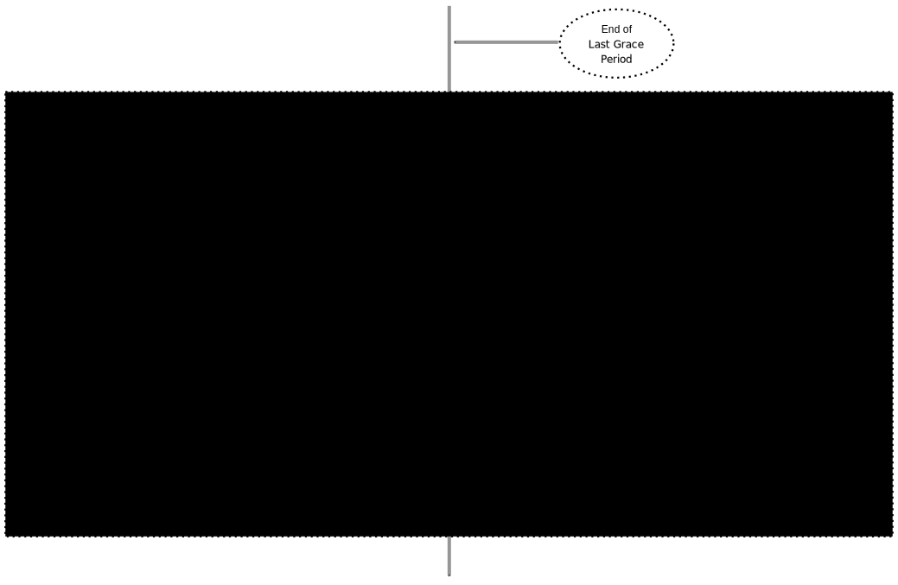
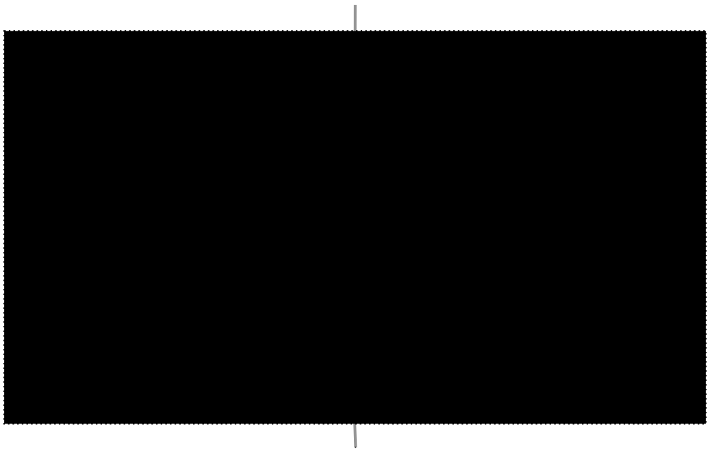
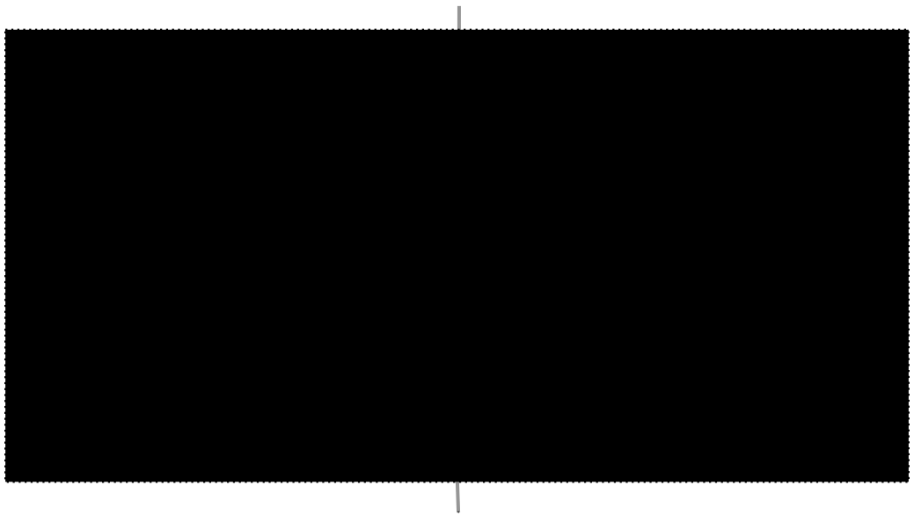
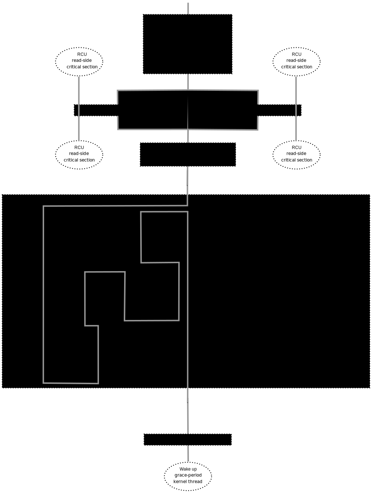
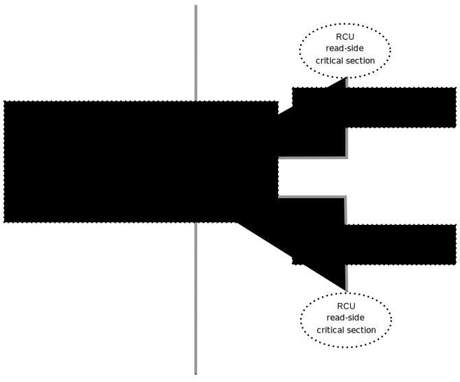
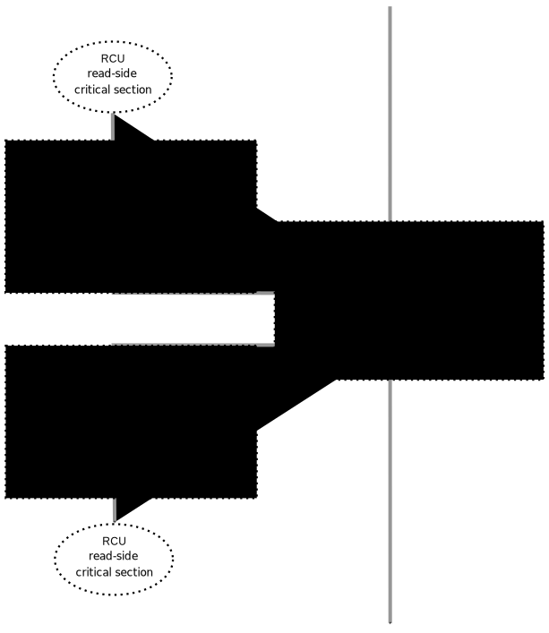
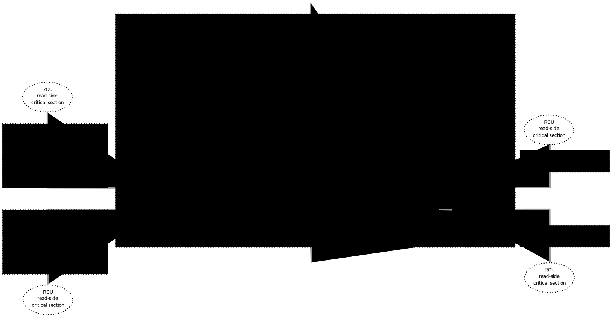
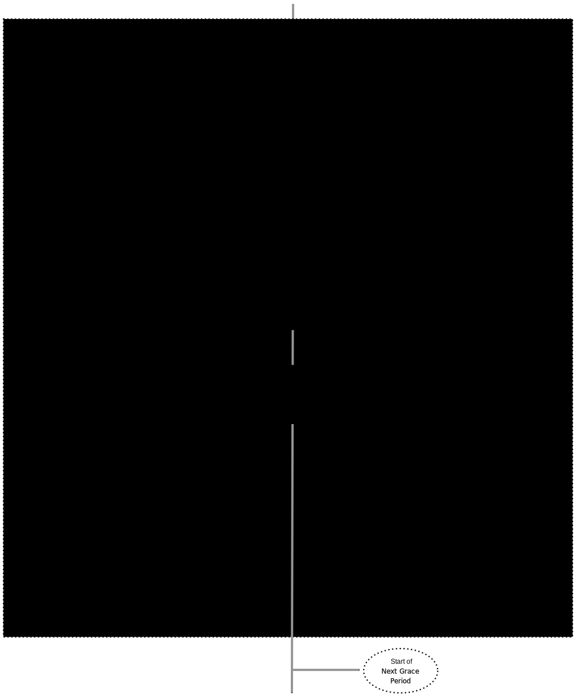
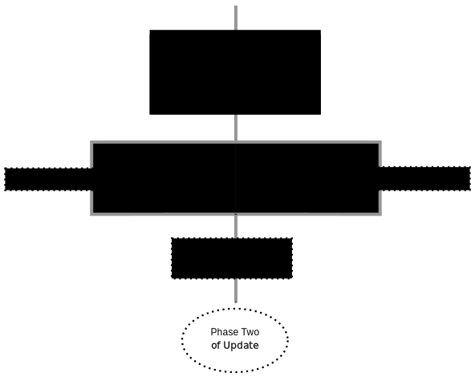

August 8, 2017
This article was contributed by Paul E. McKenney
This document gives a rough visual overview of how Tree RCU's grace-period memory ordering guarantee is provided.
RCU grace periods provide extremely strong memory-ordering guarantees for non-idle non-offline code. Any code that happens after the end of a given RCU grace period is guaranteed to see the effects of all accesses prior to the beginning of that grace period that are within RCU read-side critical sections. Similarly, any code that happens before the beginning of a given RCU grace period is guaranteed to see the effects of all accesses following the end of that grace period that are within RCU read-side critical sections.
Note well that RCU-sched read-side critical sections include any region of code for which preemption is disabled. Given that each individual machine instruction can be thought of as an extremely small region of preemption-disabled code, one can think of synchronize_rcu() as smp_mb() on steroids.
RCU updaters use this guarantee by splitting their updates into two phases, one of which is executed before the grace period and the other of which is executed after the grace period. In the most common use case, phase one removes an element from a linked RCU-protected data structure, and phase two frees that element. For this to work, any readers that have witnessed state prior to the phase-one update (in the common case, removal) must not witness state following the phase-two update (in the common case, freeing).
The RCU implementation provides this guarantee using a network of lock-based critical sections, memory barriers, and per-CPU processing, as is described in the following sections.
The workhorse for RCU's grace-period memory ordering is the critical section for the rcu_node structure's ->lock. These critical sections use helper functions for lock acquisition, including raw_spin_lock_rcu_node(), raw_spin_lock_irq_rcu_node(), and raw_spin_lock_irqsave_rcu_node(). Their lock-release counterparts are raw_spin_unlock_rcu_node(), raw_spin_unlock_irq_rcu_node(), and raw_spin_unlock_irqrestore_rcu_node(), respectively. For completeness, a raw_spin_trylock_rcu_node() is also provided. The key point is that the lock-acquisition functions, including raw_spin_trylock_rcu_node(), all invoke smp_mb__after_unlock_lock() immediately after successful acquisition of the lock.
Therefore, for any given rcu_node structure, any access happening before one of the above lock-release functions will be seen by all CPUs as happening before any access happening after a later one of the above lock-acquisition functions. Furthermore, any access happening before one of the above lock-release function on any given CPU will be seen by all CPUs as happening before any access happening after a later one of the above lock-acquisition functions executing on that same CPU, even if the lock-release and lock-acquisition functions are operating on different rcu_node structures. Tree RCU uses these two ordering guarantees to form an ordering network among all CPUs that were in any way involved in the grace period, including any CPUs that came online or went offline during the grace period in question.
The following litmus test exhibits the ordering effects of these lock-acquisition and lock-release functions:
1 int x, y, z;
2
3 void task0(void)
4 {
5 raw_spin_lock_rcu_node(rnp);
6 WRITE_ONCE(x, 1);
7 r1 = READ_ONCE(y);
8 raw_spin_unlock_rcu_node(rnp);
9 }
10
11 void task1(void)
12 {
13 raw_spin_lock_rcu_node(rnp);
14 WRITE_ONCE(y, 1);
15 r2 = READ_ONCE(z);
16 raw_spin_unlock_rcu_node(rnp);
17 }
18
19 void task2(void)
20 {
21 WRITE_ONCE(z, 1);
22 smp_mb();
23 r3 = READ_ONCE(x);
24 }
25
26 WARN_ON(r1 == 0 && r2 == 0 && r3 == 0);
The WARN_ON() is evaluated at “the end of time”, after all changes have propagated throughout the system. Without the smp_mb__after_unlock_lock() provided by the acquisition functions, this WARN_ON() could trigger, for example on PowerPC. The smp_mb__after_unlock_lock() invocations prevent this WARN_ON() from triggering.
This approach must be extended to include idle CPUs, which need RCU's grace-period memory ordering guarantee to extend to any RCU read-side critical sections preceding and following the current idle sojourn. This case is handled by calls to the strongly ordered atomic_add_return() read-modify-write atomic operation that is invoked within rcu_dynticks_eqs_enter() at idle-entry time and within rcu_dynticks_eqs_exit() at idle-exit time. The grace-period kthread invokes rcu_dynticks_snap() and rcu_dynticks_in_eqs_since() (both of which invoke an atomic_add_return() of zero) to detect idle CPUs.
| Quick Quiz: |
|---|
| But what about CPUs that remain offline for the entire grace period? |
| Answer: |
| Such CPUs will be offline at the beginning of the grace period, so the grace period won't expect quiescent states from them. Races between grace-period start and CPU-hotplug operations are mediated by the CPU's leaf rcu_node structure's ->lock as described above. |
The approach must be extended to handle one final case, that of waking a task blocked in synchronize_rcu(). This task might be affinitied to a CPU that is not yet aware that the grace period has ended, and thus might not yet be subject to the grace period's memory ordering. Therefore, there is an smp_mb() after the return from wait_for_completion() in the synchronize_rcu() code path.
| Quick Quiz: |
|---|
| What? Where??? I don't see any smp_mb() after the return from wait_for_completion()!!! |
| Answer: |
| That would be because I spotted the need for that smp_mb() during the creation of this documentation, and it is therefore unlikely to hit mainline before v4.14. Kudos to Lance Roy, Will Deacon, Peter Zijlstra, and Jonathan Cameron for asking questions that sensitized me to the rather elaborate sequence of events that demonstrate the need for this memory barrier. |
Tree RCU's grace--period memory-ordering guarantees rely most heavily on the rcu_node structure's ->lock field, so much so that it is necessary to abbreviate this pattern in the diagrams in the next section. For example, consider the rcu_prepare_for_idle() function shown below, which is one of several functions that enforce ordering of newly arrived RCU callbacks against future grace periods:
1 static void rcu_prepare_for_idle(void)
2 {
3 bool needwake;
4 struct rcu_data *rdp;
5 struct rcu_dynticks *rdtp = this_cpu_ptr(&rcu_dynticks);
6 struct rcu_node *rnp;
7 struct rcu_state *rsp;
8 int tne;
9
10 if (IS_ENABLED(CONFIG_RCU_NOCB_CPU_ALL) ||
11 rcu_is_nocb_cpu(smp_processor_id()))
12 return;
13 tne = READ_ONCE(tick_nohz_active);
14 if (tne != rdtp->tick_nohz_enabled_snap) {
15 if (rcu_cpu_has_callbacks(NULL))
16 invoke_rcu_core();
17 rdtp->tick_nohz_enabled_snap = tne;
18 return;
19 }
20 if (!tne)
21 return;
22 if (rdtp->all_lazy &&
23 rdtp->nonlazy_posted != rdtp->nonlazy_posted_snap) {
24 rdtp->all_lazy = false;
25 rdtp->nonlazy_posted_snap = rdtp->nonlazy_posted;
26 invoke_rcu_core();
27 return;
28 }
29 if (rdtp->last_accelerate == jiffies)
30 return;
31 rdtp->last_accelerate = jiffies;
32 for_each_rcu_flavor(rsp) {
33 rdp = this_cpu_ptr(rsp->rda);
34 if (rcu_segcblist_pend_cbs(&rdp->cblist))
35 continue;
36 rnp = rdp->mynode;
37 raw_spin_lock_rcu_node(rnp);
38 needwake = rcu_accelerate_cbs(rsp, rnp, rdp);
39 raw_spin_unlock_rcu_node(rnp);
40 if (needwake)
41 rcu_gp_kthread_wake(rsp);
42 }
43 }
But the only part of rcu_prepare_for_idle() that really matters for this discussion are lines 37–39. We will therefore abbreviate this function as follows:
The box represents the rcu_node structure's ->lock critical section, with the double line on top representing the additional smp_mb__after_unlock_lock().
Tree RCU's grace-period memory-ordering guarantee is provided by a number of RCU components:
Each of the following section looks at the corresponding component in detail.
If RCU's grace-period guarantee is to mean anything at all, any access that happens before a given invocation of call_rcu() must also happen before the corresponding grace period. The implementation of this portion of RCU's grace period guarantee is shown in the following figure:

Because call_rcu() normally acts only on CPU-local state, it provides no ordering guarantees, either for itself or for phase one of the update (which again will usually be removal of an element from an RCU-protected data structure). It simply enqueues the rcu_head structure on a per-CPU list, which cannot become associated with a grace period until a later call to rcu_accelerate_cbs(), as shown in the diagram above.
One set of code paths shown on the left invokes rcu_accelerate_cbs() via note_gp_changes(), either directly from call_rcu() (if the current CPU is inundated with queued rcu_head structures) or more likely from an RCU_SOFTIRQ handler. Another code path in the middle is taken only in kernels built with CONFIG_RCU_FAST_NO_HZ=y, which invokes rcu_accelerate_cbs() via rcu_prepare_for_idle(). The final code path on the right is taken only in kernels built with CONFIG_HOTPLUG_CPU=y, which invokes rcu_accelerate_cbs() via rcu_advance_cbs(), rcu_migrate_callbacks, rcutree_migrate_callbacks(), and takedown_cpu(), which in turn is invoked on a surviving CPU after the outgoing CPU has been completely offlined.
There are a few other code paths within grace-period processing that opportunistically invoke rcu_accelerate_cbs(). However, either way, all of the CPU's recently queued rcu_head structures are associated with a future grace-period number under the protection of the CPU's lead rcu_node structure's ->lock. In all cases, there is full ordering against any prior critical section for that same rcu_node structure's ->lock, and also full ordering against any of the current task's or CPU's prior critical sections for any rcu_node structure's ->lock.
The next section will show how this ordering ensures that any accesses prior to the call_rcu() (particularly including phase one of the update) happen before the start of the corresponding grace period.
| Quick Quiz: |
|---|
| But what about synchronize_rcu()? |
| Answer: |
| The synchronize_rcu() passes call_rcu() to wait_rcu_gp(), which invokes it. So either way, it eventually comes down to call_rcu(). |
Grace-period initialization is carried out by the grace-period kernel thread, which makes several passes over the rcu_node tree within the rcu_gp_init() function. This means that showing the full flow of ordering through the grace-period computation will require duplicating this tree. If you find this confusing, please note that the state of the rcu_node changes over time, just like Heraclitus's river. However, to keep the rcu_node river tractable, the grace-period kernel thread's traversals are presented in multiple parts, starting in this section with the various phases of grace-period initialization.
The first ordering-related grace-period initialization action is to advance the rcu_state structure's ->gp_seq grace-period-number counter, as shown below:

The actual increment is carried out using smp_store_release(), which helps reject false-positive RCU CPU stall detection. Note that only the root rcu_node structure is touched.
The first pass through the rcu_node tree updates bitmasks based on CPUs having come online or gone offline since the start of the previous grace period. In the common case where the number of online CPUs for this rcu_node structure has not transitioned to or from zero, this pass will scan only the leaf rcu_node structures. However, if the number of online CPUs for a given leaf rcu_node structure has transitioned from zero, rcu_init_new_rnp() will be invoked for the first incoming CPU. Similarly, if the number of online CPUs for a given leaf rcu_node structure has transitioned to zero, rcu_cleanup_dead_rnp() will be invoked for the last outgoing CPU. The diagram below shows the path of ordering if the leftmost rcu_node structure onlines its first CPU and if the next rcu_node structure has no online CPUs (or, alternatively if the leftmost rcu_node structure offlines its last CPU and if the next rcu_node structure has no online CPUs).

The final rcu_gp_init() pass through the rcu_node tree traverses breadth-first, setting each rcu_node structure's ->gp_seq field to the newly advanced value from the rcu_state structure, as shown in the following diagram.

This change will also cause each CPU's next call to __note_gp_changes() to notice that a new grace period has started, as described in the next section. But because the grace-period kthread started the grace period at the root (with the advancing of the rcu_state structure's ->gp_seq field) before setting each leaf rcu_node structure's ->gp_seq field, each CPU's observation of the start of the grace period will happen after the actual start of the grace period.
| Quick Quiz: |
|---|
| But what about the CPU that started the grace period? Why wouldn't it see the start of the grace period right when it started that grace period? |
| Answer: |
| In some deep philosophical and overly anthromorphized sense, yes, the CPU starting the grace period is immediately aware of having done so. However, if we instead assume that RCU is not self-aware, then even the CPU starting the grace period does not really become aware of the start of this grace period until its first call to __note_gp_changes(). On the other hand, this CPU potentially gets early notification because it invokes __note_gp_changes() during its last rcu_gp_init() pass through its leaf rcu_node structure. |
When all entities that might block the grace period have reported quiescent states (or as described in a later section, had quiescent states reported on their behalf), the grace period can end. Online non-idle CPUs report their own quiescent states, as shown in the following diagram:

This is for the last CPU to report a quiescent state, which signals the end of the grace period. Earlier quiescent states would push up the rcu_node tree only until they encountered an rcu_node structure that is waiting for additional quiescent states. However, ordering is nevertheless preserved because some later quiescent state will acquire that rcu_node structure's ->lock.
Any number of events can lead up to a CPU invoking note_gp_changes (or alternatively, directly invoking __note_gp_changes()), at which point that CPU will notice the start of a new grace period while holding its leaf rcu_node lock. Therefore, all execution shown in this diagram happens after the start of the grace period. In addition, this CPU will consider any RCU read-side critical section that started before the invocation of __note_gp_changes() to have started before the grace period, and thus a critical section that the grace period must wait on.
| Quick Quiz: |
|---|
| But a RCU read-side critical section might have started after the beginning of the grace period (the advancing of ->gp_seq from earlier), so why should the grace period wait on such a critical section? |
| Answer: |
| It is indeed not necessary for the grace period to wait on such a critical section. However, it is permissible to wait on it. And it is furthermore important to wait on it, as this lazy approach is far more scalable than a “big bang” all-at-once grace-period start could possibly be. |
If the CPU does a context switch, a quiescent state will be noted by rcu_node_context_switch() on the left. On the other hand, if the CPU takes a scheduler-clock interrupt while executing in usermode, a quiescent state will be noted by rcu_sched_clock_irq() on the right. Either way, the passage through a quiescent state will be noted in a per-CPU variable.
The next time an RCU_SOFTIRQ handler executes on this CPU (for example, after the next scheduler-clock interrupt), rcu_core() will invoke rcu_check_quiescent_state(), which will notice the recorded quiescent state, and invoke rcu_report_qs_rdp(). If rcu_report_qs_rdp() verifies that the quiescent state really does apply to the current grace period, it invokes rcu_report_rnp() which traverses up the rcu_node tree as shown at the bottom of the diagram, clearing bits from each rcu_node structure's ->qsmask field, and propagating up the tree when the result is zero.
Note that traversal passes upwards out of a given rcu_node structure only if the current CPU is reporting the last quiescent state for the subtree headed by that rcu_node structure. A key point is that if a CPU's traversal stops at a given rcu_node structure, then there will be a later traversal by another CPU (or perhaps the same one) that proceeds upwards from that point, and the rcu_node ->lock guarantees that the first CPU's quiescent state happens before the remainder of the second CPU's traversal. Applying this line of thought repeatedly shows that all CPUs' quiescent states happen before the last CPU traverses through the root rcu_node structure, the “last CPU” being the one that clears the last bit in the root rcu_node structure's ->qsmask field.
Due to energy-efficiency considerations, RCU is forbidden from disturbing idle CPUs. CPUs are therefore required to notify RCU when entering or leaving idle state, which they do via fully ordered value-returning atomic operations on a per-CPU variable. The ordering effects are as shown below:

The RCU grace-period kernel thread samples the per-CPU idleness variable while holding the corresponding CPU's leaf rcu_node structure's ->lock. This means that any RCU read-side critical sections that precede the idle period (the oval near the top of the diagram above) will happen before the end of the current grace period. Similarly, the beginning of the current grace period will happen before any RCU read-side critical sections that follow the idle period (the oval near the bottom of the diagram above).
Plumbing this into the full grace-period execution is described below.
RCU is also forbidden from disturbing offline CPUs, which might well be powered off and removed from the system completely. CPUs are therefore required to notify RCU of their comings and goings as part of the corresponding CPU hotplug operations. The ordering effects are shown below:

Because CPU hotplug operations are much less frequent than idle transitions, they are heavier weight, and thus acquire the CPU's leaf rcu_node structure's ->lock and update this structure's ->qsmaskinitnext. The RCU grace-period kernel thread samples this mask to detect CPUs having gone offline since the beginning of this grace period.
Plumbing this into the full grace-period execution is described below.
As noted above, idle and offline CPUs cannot report their own quiescent states, and therefore the grace-period kernel thread must do the reporting on their behalf. This process is called “forcing quiescent states”, it is repeated every few jiffies, and its ordering effects are shown below:

Each pass of quiescent state forcing is guaranteed to traverse the leaf rcu_node structures, and if there are no new quiescent states due to recently idled and/or offlined CPUs, then only the leaves are traversed. However, if there is a newly offlined CPU as illustrated on the left or a newly idled CPU as illustrated on the right, the corresponding quiescent state will be driven up towards the root. As with self-reported quiescent states, the upwards driving stops once it reaches an rcu_node structure that has quiescent states outstanding from other CPUs.
| Quick Quiz: |
|---|
| The leftmost drive to root stopped before it reached the root rcu_node structure, which means that there are still CPUs subordinate to that structure on which the current grace period is waiting. Given that, how is it possible that the rightmost drive to root ended the grace period? |
| Answer: |
| Good analysis! It is in fact impossible in the absence of bugs in RCU. But this diagram is complex enough as it is, so simplicity overrode accuracy. You can think of it as poetic license, or you can think of it as misdirection that is resolved in the stitched-together diagram. |
Grace-period cleanup first scans the rcu_node tree breadth-first advancing all the ->gp_seq fields, then it advances the rcu_state structure's ->gp_seq field. The ordering effects are shown below:

As indicated by the oval at the bottom of the diagram, once grace-period cleanup is complete, the next grace period can begin.
| Quick Quiz: |
|---|
| But when precisely does the grace period end? |
| Answer: |
| There is no useful single point at which the grace period can be said to end. The earliest reasonable candidate is as soon as the last CPU has reported its quiescent state, but it may be some milliseconds before RCU becomes aware of this. The latest reasonable candidate is once the rcu_state structure's ->gp_seq field has been updated, but it is quite possible that some CPUs have already completed phase two of their updates by that time. In short, if you are going to work with RCU, you need to learn to embrace uncertainty. |
Once a given CPU's leaf rcu_node structure's ->gp_seq field has been updated, that CPU can begin invoking its RCU callbacks that were waiting for this grace period to end. These callbacks are identified by rcu_advance_cbs(), which is usually invoked by __note_gp_changes(). As shown in the diagram below, this invocation can be triggered by the scheduling-clock interrupt (rcu_sched_clock_irq() on the left) or by idle entry (rcu_cleanup_after_idle() on the right, but only for kernels build with CONFIG_RCU_FAST_NO_HZ=y). Either way, RCU_SOFTIRQ is raised, which results in rcu_do_batch() invoking the callbacks, which in turn allows those callbacks to carry out (either directly or indirectly via wakeup) the needed phase-two processing for each update.

Please note that callback invocation can also be prompted by any number of corner-case code paths, for example, when a CPU notes that it has excessive numbers of callbacks queued. In all cases, the CPU acquires its leaf rcu_node structure's ->lock before invoking callbacks, which preserves the required ordering against the newly completed grace period.
However, if the callback function communicates to other CPUs, for example, doing a wakeup, then it is that function's responsibility to maintain ordering. For example, if the callback function wakes up a task that runs on some other CPU, proper ordering must in place in both the callback function and the task being awakened. To see why this is important, consider the top half of the grace-period cleanup diagram. The callback might be running on a CPU corresponding to the leftmost leaf rcu_node structure, and awaken a task that is to run on a CPU corresponding to the rightmost leaf rcu_node structure, and the grace-period kernel thread might not yet have reached the rightmost leaf. In this case, the grace period's memory ordering might not yet have reached that CPU, so again the callback function and the awakened task must supply proper ordering.
A stitched-together diagram is here.
This work represents the view of the author and does not necessarily represent the view of IBM.
Linux is a registered trademark of Linus Torvalds.
Other company, product, and service names may be trademarks or service marks of others.